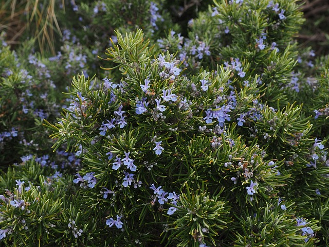
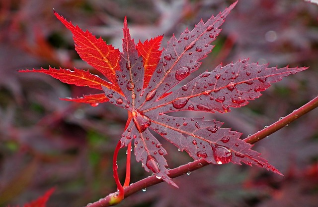
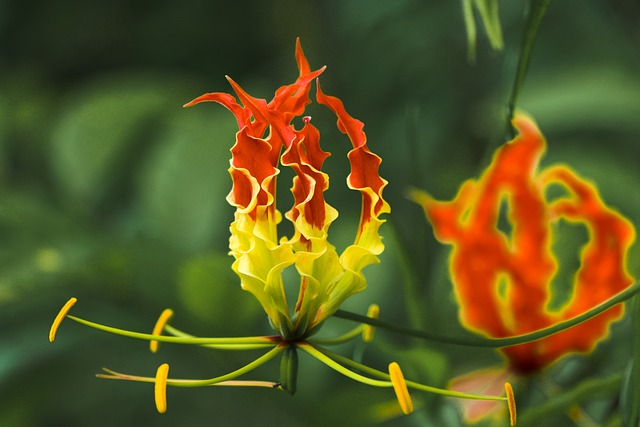
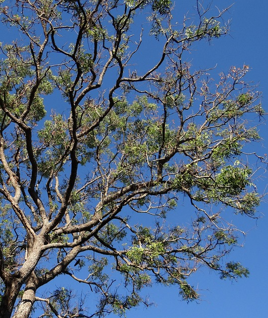
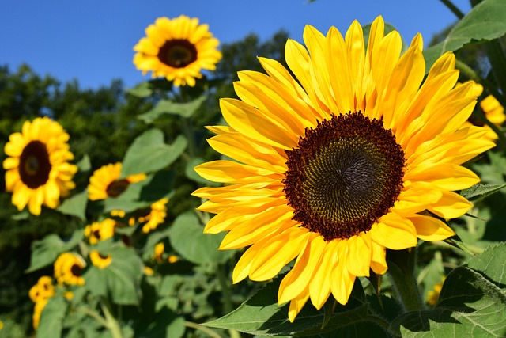
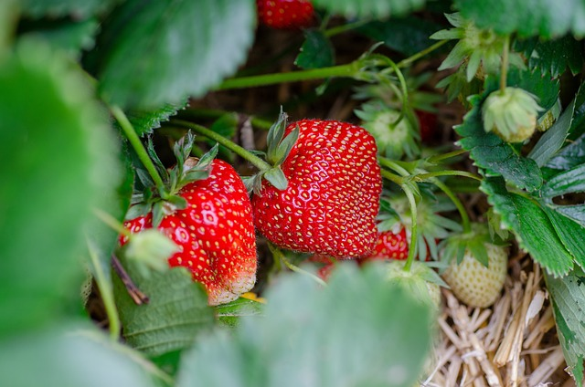

Rosemary, (Salvia rosmarinus), small evergreen plant of the mint family (Lamiaceae), the leaves of which are used to flavour foods. Native to the Mediterranean region, rosemary has naturalized throughout much of Europe and is widely grown in gardens in warm climates. The leaves have a pungent, slightly bitter taste and, dried or fresh, are generally used to season foods, particularly lamb, duck, chicken, sausages, seafood, stuffings, stews, soups, potatoes, tomatoes, turnips, and other vegetables, as well as beverages.

Maple, (Acer), any of a large genus (about 200 species) of shrubs or trees in the family Sapindaceae, widely distributed in the North Temperate Zone but concentrated in China. Maples constitute one of the most important groups of ornamentals for planting in lawns, along streets, and in parks. They offer a great variety of form, size, and foliage; many display striking autumn colour. Several yield maple syrup, and some provide valuable, dense hard wood for furniture and other uses. All maples bear pairs of winged seeds, called samaras or keys. The leaves are arranged oppositely on twigs.

Flame Lily (Gloriosa superba) is a beautiful plant that grows well in tropical climates. This perennial flower has gained popularity since its introduction into horticulture in 1875. Flame Lilies are native to South Africa and Asia. They are also known as Gloriosa, African Lily, Fire lily, climbing flame lily or simply glory vine. These plants are very easy to grow and require little maintenance. Its flowers are large and fragrant, and they attract butterflies. This plant has been grown for centuries in Europe, where it was used as a medicinal herb. Today, it is also cultivated for cut flower production.

Neem, (Azadirachta indica), also called nim or margosa, fast-growing tree of the mahogany family (Meliaceae), valued as a medicinal plant, as a source of organic pesticides, and for its timber. Neem is likely native to the Indian subcontinent and to dry areas throughout South Asia. It has been introduced to parts of Africa, the Caribbean, and numerous counties in South and Central America. The plant has long been used in Ayurvedic and folk medicine and is used in cosmetics and in organic farming applications.

Sunflower, (genus Helianthus), genus of nearly 70 species of herbaceous plants of the aster family (Asteraceae). Sunflowers are native primarily to North and South America, and some species are cultivated as ornamentals for their spectacular size and flower heads and for their edible seeds. The Jerusalem artichoke (Helianthus tuberosus) is cultivated for its edible underground tubers. The leaves are used as fodder, the flowers yield a yellow dye, and the seeds contain oil and are used for food.

Strawberry, (genus Fragaria), genus of more than 20 species of flowering plants in the rose family (Rosaceae) and their edible fruit. Strawberries are native to the temperate regions of the Northern Hemisphere, and cultivated varieties are widely grown throughout the world. The fruits are rich in vitamin C and are commonly eaten fresh as a dessert fruit, are used as a pastry or pie filling, and may be preserved in many ways. Strawberry shortcake—made of fresh strawberries, sponge cake, and whipped cream—is a traditional American dessert.